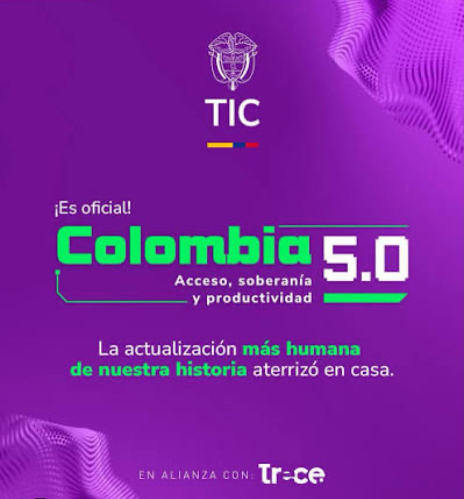

Colombia 5.0 es la política digital más humana de nuestra historia. Explora cómo el pensamiento computacional, la inteligencia artificial y el software libre construyen nuestra soberanía tecnológica.
Colombia 5.0 is the most human digital policy in our history. Explore how computational thinking, artificial intelligence, and free software build our technological sovereignty.
Proyecto escolar que destaca la soberanía tecnológica, la inclusión digital y el libre acceso al conocimiento.
School project highlighting technological sovereignty, digital inclusion, and open access to knowledge.
Resumen de las dos conferencias sobre pensamiento computacional, inteligencia artificial y software libre.
Summary of the two conferences about computational thinking, artificial intelligence, and free software.
Colombia 5.0 — Soberanía Tecnológica
Colombia 5.0 — Technological Sovereignty
Introducción
La conferencia trató sobre el pensamiento computacional y la inteligencia artificial como herramientas para fortalecer la soberanía tecnológica. Se destacó la importancia de que las personas no sean solo consumidoras de tecnología, sino que comprendan cómo funciona y participen en su creación y desarrollo.
Introduction
The conference discussed computational thinking and artificial intelligence as tools to strengthen technological sovereignty. It emphasized the importance of people not only consuming technology, but understanding how it works and participating in its creation and development.
Desarrollo
El conferencista explicó cómo el pensamiento computacional permite analizar y resolver problemas mediante cuatro etapas:
Development
The speaker explained how computational thinking allows problem analysis and resolution through four stages:
También habló sobre la IA como una nueva mediación tecnológica y resaltó la importancia del software libre, el conocimiento abierto y la soberanía tecnológica para que las comunidades desarrollen sus propias soluciones.
He also spoke about AI as a new technological mediation and highlighted the importance of free software, open knowledge, and technological sovereignty so communities can develop their own solutions.
Free Software Foundation — GNU — Brecha Digital
Free Software Foundation — GNU — Digital Divide
El conferencista explicó que el software libre ayuda a reducir la brecha digital porque permite que cualquier persona use, estudie, modifique y distribuya programas sin costos de licencias.
The speaker explained that free software helps reduce the digital divide because it allows anyone to use, study, modify, and distribute programs without license costs.
Se mencionaron tres pilares fundamentales:
Three fundamental pillars were mentioned:
Historia: La Lucha Contra el Monopolio
History: The Fight Against Monopoly
Se presentó el origen del movimiento del software libre, destacando la creación de la Free Software Foundation (FSF) y el proyecto GNU como respuesta a la concentración del poder tecnológico en grandes corporaciones.
The origin of the free software movement was presented, highlighting the creation of the Free Software Foundation (FSF) and the GNU project as a response to the concentration of technological power in large corporations.
Términos clave de las conferencias.
Key terms from the conferences.
Valores y principios que guían el uso responsable de la tecnología.
Values and principles that guide the responsible use of technology.
La conferencia promueve el uso responsable de la tecnología y la inteligencia artificial, destacando la necesidad de formar ciudadanos críticos capaces de comprender cómo funcionan estas herramientas. También resalta la democratización del acceso mediante el software libre, buscando disminuir la brecha digital y garantizar que el conocimiento tecnológico esté al alcance de todas las personas.
The conference promotes responsible use of technology and artificial intelligence, highlighting the need to educate critical citizens capable of understanding how these tools work. It also emphasizes democratizing access through free software, seeking to reduce the digital divide and ensure that technological knowledge is available to everyone.
Autor: Danny Johana Heredia
Author: Danny Johana Heredia
GitHub: https://github.com/Danny200431
GitHub: https://github.com/Danny200431
Este trabajo presenta las ideas principales de la conferencia y la importancia de generar una cultura digital inclusiva.
This work presents the main ideas from the conference and the importance of building an inclusive digital culture.